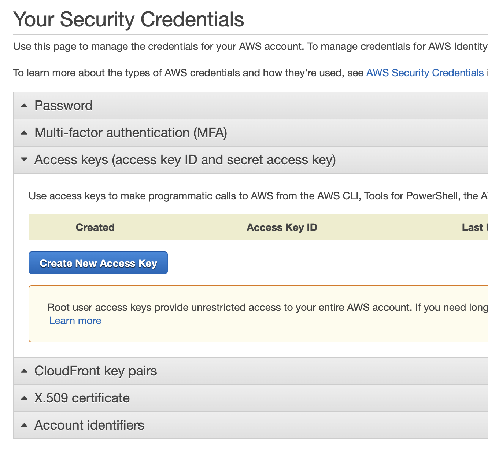
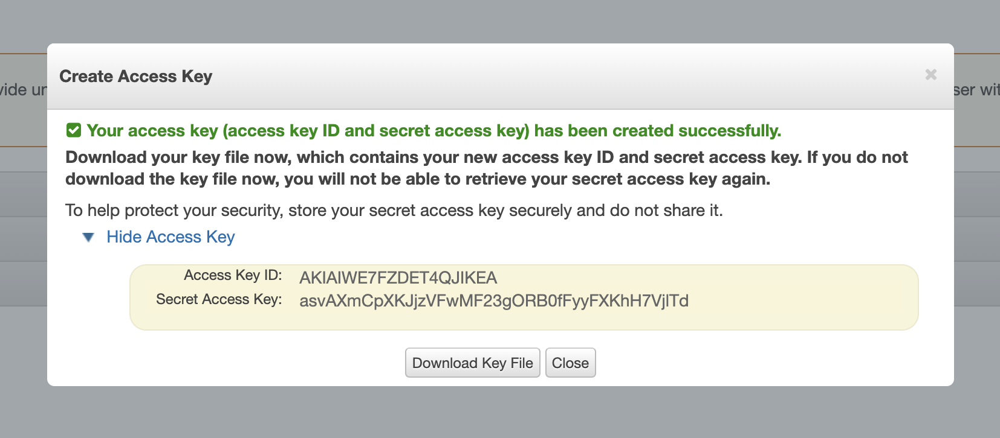

Neal Magee, Ph.D.
Solution Architect, Research Computing
University of Virginia, Fall 2020
SDKs (Software Development Kits) represent code-based interfaces to an application framework. In the case of Amazon Web Services, every service is available primarily as public API. (Even the web console is merely interacting with these APIs.) Rather than configuring elaborate authenticated RESTful API calls, the AWS SDKs do the heavy lifting for the developer in posting payloads, handling response data, error handling, and tainting requests for required fields and acceptable data.
This lab introduces the basics of working with the boto3 library in Python3.
boto3 and awscli - to install, run pip install boto3 awscliYou can create a virtualenv for this, install it to the system, your user space, or work from within a Docker container.
Open the section named "Access keys" and create a new access key if you have not before.
Once you create a new key the following screen will appear. This will be your ONLY opportunity to copy or download the secret access key. Store both keys in a secure location.
NOTE that the keys you just created are for your "root" account access, which means they have full owner privileges
aws command-line has been installed correctly, you should be able to configure it with your keys:aws configure
**********************
**********************************************
us-east-1aws s3 ls
Should display all your S3 buckets. If you have no buckets, try making one:
aws s3 mb s3://some-bucket-name
boto3 will look for your AWS credentials, which are now stored in ./aws/ in your home directory.
boto3 has options for creating client and resources. The boto3 reference for EC2 can be found here and declares a client like this:
import boto3
client = boto3.client('ec2')
boto3, get or create the following:[some-key][sg-a1b2c3d4e5f6g7h8][subnet-a12b34c56][ami-02354e95b39ca8dec]run_instances call will look something like this:
import boto3
response = client.run_instances(
ImageId='ami-02354e95b39ca8dec',
InstanceType='t2.micro',
KeyName='mageen-uvasom',
SecurityGroupIds=[
'sg-04262c688917e0891',
],
SubnetId='subnet-b39b21c5',
DryRun=False,
MinCount=1,
MaxCount=1,
InstanceInitiatedShutdownBehavior='terminate',
TagSpecifications=[
{
'ResourceType': 'instance',
'Tags': [
{
'Key': 'Name',
'Value': 'boto3-created-instance'
},
]
},
]
)
print(response)
This will create the following response payload describing the instance that has been created:
{'Groups': [], 'Instances': [{'AmiLaunchIndex': 0, 'ImageId': 'ami-02354e95b39ca8dec', 'InstanceId': 'i-018ba63c1fd6e2f13', 'InstanceType': 't2.micro', 'KeyName': 'mageen-uvasom', 'LaunchTime': datetime.datetime(2020, 8, 21, 18, 28, tzinfo=tzutc()), 'Monitoring': {'State': 'disabled'}, 'Placement': {'AvailabilityZone': 'us-east-1d', 'GroupName': '', 'Tenancy': 'default'}, 'PrivateDnsName': 'ip-172-31-10-53.ec2.internal', 'PrivateIpAddress': '172.31.10.53', 'ProductCodes': [], 'PublicDnsName': '', 'State': {'Code': 0, 'Name': 'pending'}, 'StateTransitionReason': '', 'SubnetId': 'subnet-b39b21c5', 'VpcId': 'vpc-ba95c4de', 'Architecture': 'x86_64', 'BlockDeviceMappings': [], 'ClientToken': '', 'EbsOptimized': False, 'Hypervisor': 'xen', 'NetworkInterfaces': [{'Attachment': {'AttachTime': datetime.datetime(2020, 8, 21, 18, 28, tzinfo=tzutc()), 'AttachmentId': 'eni-attach-099a6b31b78c1bfb4', 'DeleteOnTermination': True, 'DeviceIndex': 0, 'Status': 'attaching'}, 'Description': '', 'Groups': [{'GroupName': 'crconnect-web', 'GroupId': 'sg-04262c688917e0891'}], 'Ipv6Addresses': [], 'MacAddress': '0a:81:bd:28:10:0f', 'NetworkInterfaceId': 'eni-00163e500f790ad94', 'OwnerId': '474683445819', 'PrivateDnsName': 'ip-172-31-10-53.ec2.internal', 'PrivateIpAddress': '172.31.10.53', 'PrivateIpAddresses': [{'Primary': True, 'PrivateDnsName': 'ip-172-31-10-53.ec2.internal', 'PrivateIpAddress': '172.31.10.53'}], 'SourceDestCheck': True, 'Status': 'in-use', 'SubnetId': 'subnet-b39b21c5', 'VpcId': 'vpc-ba95c4de', 'InterfaceType': 'interface'}], 'RootDeviceName': '/dev/xvda', 'RootDeviceType': 'ebs', 'SecurityGroups': [{'GroupName': 'crconnect-web', 'GroupId': 'sg-04262c688917e0891'}], 'SourceDestCheck': True, 'StateReason': {'Code': 'pending', 'Message': 'pending'}, 'Tags': [{'Key': 'Name', 'Value': 'boto3-created-instance'}], 'VirtualizationType': 'hvm', 'CpuOptions': {'CoreCount': 1, 'ThreadsPerCore': 1}, 'CapacityReservationSpecification': {'CapacityReservationPreference': 'open'}, 'MetadataOptions': {'State': 'pending', 'HttpTokens': 'optional', 'HttpPutResponseHopLimit': 1, 'HttpEndpoint': 'enabled'}}], 'OwnerId': '474683445819', 'ReservationId': 'r-0f3fe6b1c3bf904da', 'ResponseMetadata': {'RequestId': '5d1fc86e-709a-47d0-8236-531d3a932024', 'HTTPStatusCode': 200, 'HTTPHeaders': {'x-amzn-requestid': '5d1fc86e-709a-47d0-8236-531d3a932024', 'content-type': 'text/xml;charset=UTF-8', 'content-length': '4916', 'vary': 'accept-encoding', 'date': 'Fri, 21 Aug 2020 18:28:00 GMT', 'server': 'AmazonEC2'}, 'RetryAttempts': 0}}
boto3 resource has a DryRun flag. Set this to True to test your request. The response data will inform you whether your request was structured well and would have succeeded.try and except like this:
import botocore
import boto3
client = boto3.client('aws_service_name')
try:
client.some_api_call(SomeParam='some_param')
except botocore.exceptions.ClientError as error:
# Put your error handling logic here
raise error
except botocore.exceptions.ParamValidationError as error:
raise ValueError('The parameters you provided are incorrect: {}'.format(error))
Select two scenarios below and complete them:
Update the necessary values in the run_instances() snippet below and run it yourself. Verify that a new instance has been created in your account.
import boto3
response = client.run_instances(
ImageId='ami-02354e95b39ca8dec',
InstanceType='t2.micro',
KeyName='<YOUR_KEY_NAME>',
SecurityGroupIds=[
'<YOUR_SECURITY_GROUP>',
],
SubnetId='<YOUR_SUBNET>',
DryRun=False,
MinCount=1,
MaxCount=1,
InstanceInitiatedShutdownBehavior='terminate',
TagSpecifications=[
{
'ResourceType': 'instance',
'Tags': [
{
'Key': 'Name',
'Value': 'boto3-created-instance'
},
]
},
]
)
print(response)
Next, terminate the instance using another Python snippet.
Create a python3 snippet that creates three buckets in S3. The boto3 documentation for S3 can be found here.
Create a python3 snippet that lists your buckets and prints them to the terminal.
For an additional challenge (optional), upload and download an object to your bucket using only Python.
SNS (simple notification service) allows you to programmatically send notifications between apps or to human recipients. In this scenario, send yourself an email or SMS message. To get started, go to the SNS service in your account using the AWS console:
boto3 request.Using the SNS publish resource, publish a message to your Topic in code. Specify at least a subject and a message.
Remove or delete any resources you created above after the lab is complete. Be especially sure not to leave an EC2 instance running!